3.1 Quy tắc sử dụng hàm
Cú pháp chung:
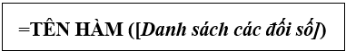
Đa số các hàm của Excel đều có đối số, nhưng cũng có những hàm không có đối số. Nếu hàm có nhiều đối số thì giữa các đối số phải được phân cách nhau bằng ký hiệu phân cách. Các ký hiệu phân cách được quy định trong Control Panel. Trong Excel mặc định ký hiệu phân cách là dấu phẩy (,).
3.2 Cách nhập hàm
Nếu công thức bắt đầu là một hàm thì phải có dấu bằng (=), hoặc dấu @, hoặc dấu cộng (+) ở phía trước. Nếu hàm là đối số của một hàm khác thì không cần nhập các dấu trên. Có 2 cách nhập hàm
o Cách 1: Nhập trực tiếp từ bàn phím
• Đặt con trỏ chuột tại ô muốn nhập hàm
• Nhập dấu bằng (=) hoặc dấu @ hoặc dấu cộng (+)
• Nhập tên hàm cùng các đối số theo đúng cú pháp
• Nhấn Enter để kết thúc.
o Cách 2: Thông qua hộp thoại Insert Function
• Đặt con trỏ chuột tại ô muốn nhập hàm
• Chọn ribbon Formulas, chọn Insert Function
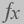
hoặc Shift+F3• Chọn Group hàm trong danh sách Function category
• Chọn hàm ần sử dụng trong mục Select a function
• Click OK để chọn hàm
• Tùy theo hàm được chọn. Excel sẽ mở hộp thoại kế tiếp cho phép nhập các đối số (nhập hoặc quét chọn). Tiến hành nhập các đối số. Ví dụ danh sách các đối số cần nhập của IF.
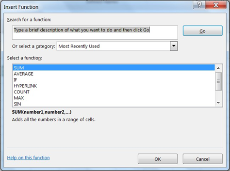
Hình 6.9 Hộp thoại Insert Function
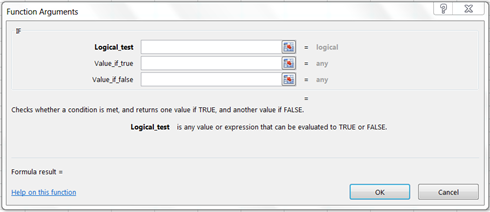
Hình 2.10 Hộp thoại Function Arguments
Các loại địa chỉ và các thông báo lỗi thường gặp
Địa chỉ tương đối
Là địa chỉ tự động cập nhật theo sự thay đổi của địa chỉ ô nguồn khi thực hiện thao tác Copy công thức để bảo toàn mối quan hệ tương đối giữa các ô trong công thức.
Quy ước: Địa chỉ tương đối của ô có dạng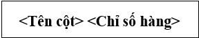
Ví dụ: Địa chỉ ô C3 được tự động cập nhật theo địa chỉ của ô nguồn C2.
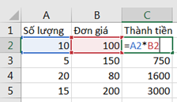
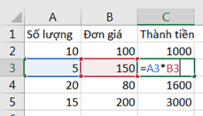
Là địa chỉ không tự động thay đổi theo địa chỉ của ô nguồn khi copy công thức.
Quy ước: Địa chỉ tuyệt đối của ô có dạng
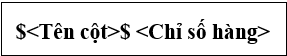
Ví dụ: Địa chỉ ô C1 không bị thay đổi khi copy công thức
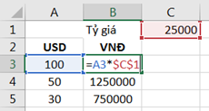
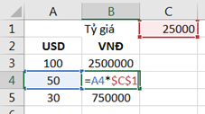
Địa chỉ hỗn hợp
Mà địa chỉ mà nó chỉ thay đổi một trong hai thành phần (hàng hoặc cột) khi copy công thức.
Quy ước: Địa chỉ hỗn hợp có dạng:
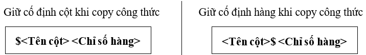
Ví dụ: Khi copy công thức từ ô D3 sang ô F3 thì cột B vẫn không thay đổi (do cột B đã được cố định bởi dấu tương đối $.
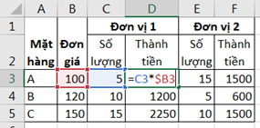
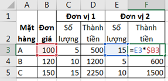
Cách chuyển đổi giữa các địa chỉ
Sử dụng phím chức năng F4 để thực hiện chuyển đổi nhanh giữa các loại địa chỉ
Ví dụ: 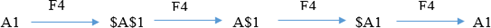
Các thông báo lỗi thường gặp trong Excel
Khi không tính được công thức thì Excel sẽ thông báo lỗi. Lỗi được ký hiệu bắt đầu bằng dấu #. Một số thông báo lỗi thường gặp:
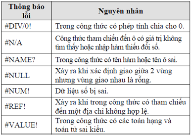
Bảng 6-2 Các lỗi thường gặp trong Excel
3.3 Nhóm hàm xử lý ngày tháng
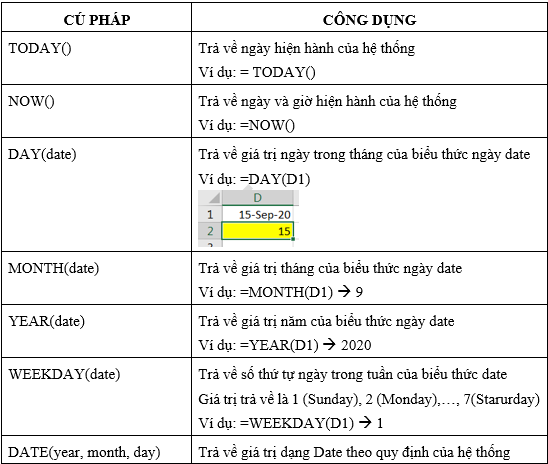
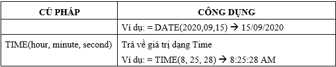
Bảng 6-3 Các hàm ngày và giờ
3.4 Nhóm hàm xử lý ký tự
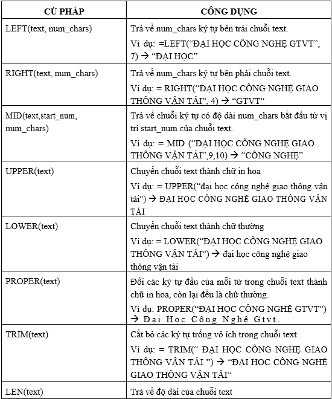
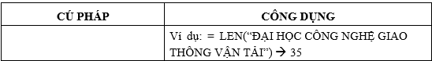
Bảng 6-4 Các hàm xử lý chuỗi
3.5 Nhóm hàm thống kê
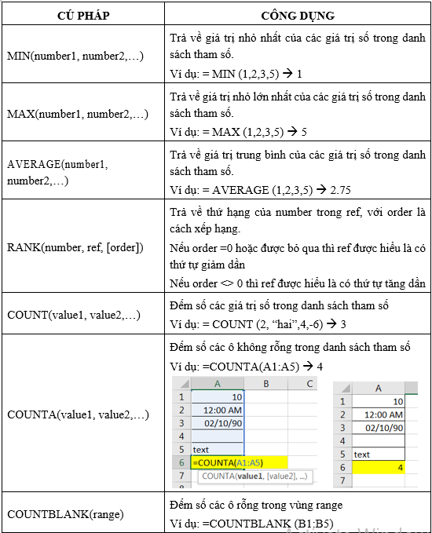
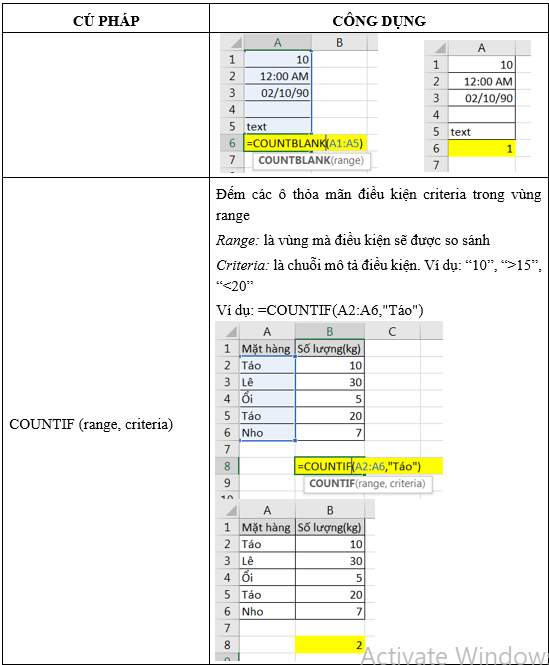
Bảng 6-5 Các hàm thống kê đơn giản
3.6 Nhóm hàm logic
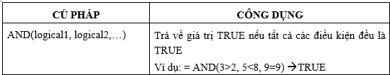
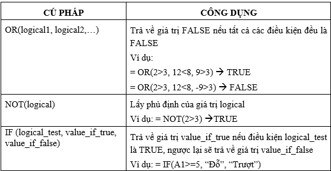
Bảng 2-6 Các hàm Logic
3.7 Nhóm hàm xử lý tham chiếu
* Hàm VLOOKUP: Hàm tham chiếu theo cột
Cú pháp:
VLOOKUP (lookup_value, Table_array, col_index_num, range_lookup)
Trong đó:
Lookup_value: Giá trị tra cứu.
Table_array: Vùng tham chiếu.
Col_index_num: Số cột muốn hiển thị.
[Range_lookup]: 0_tìm chính xác, 1_tìm tương đối
Chức năng
Tìm giá trị lookup_value trong cột trái nhất bảng table_array theo chuẩn dò tìm range_lookup, trả về vị trí tương ứng trong cột thứ col_index_num (nếu tìm thấy)
- Range_lookup=1: Tìm tương đối. Danh sách các giá trị dò tìm của bảng Table_array phải sắp xếp theo thứ tự tăng dần. Nếu tìm không thấy sẽ trả về giá trị lớn nhất nhưng nhỏ hơn lookup_value.
- Range_lookup=0: Tìm chính xác. Danh sách các giá trị dò tìm của bảng Table_array không cần sắp xếp thứ tự. Nếu tìm không thấy sẽ trả về lỗi #N/A.
Ví dụ: Hiển thị tiền phải thanh toán của khách hàng có mã hóa đơn DH003.
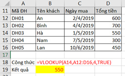
* Hàm HLOOKUP: Hàm tham chiếu theo hàng
Cú pháp
HOOKUP (Lookup_value, Table_array, row_index_num, range_lookup)
Trong đó:
Lookup_value: Giá trị tra cứu.
Table_array: Vùng tham chiếu.
row_index_num: Số hàng muốn hiển thị.
[Range_lookup]: 0_tìm chính xác, 1_tìm tương đối
Chức năng
Ý nghĩa của các đối số của hàm Hlookup tương tự như hàm Vlookup.
Tìm giá trị lookup_value trong dòng trên cùng của bảng table_array theo chuẩn dò tìm range_lookup, trả về giá trị tương ứng trong dòng thứ row_index_num (nếu tìm thấy).
Ví dụ: Điền tên hàng theo mã hàng.
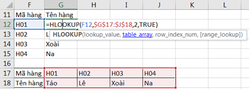
* Hàm MATCH
Cú pháp
MATCH (lookup_value, lookup_array, match_type)
Trong đó:
Lookup_value: Giá trị tra cứu.
Lookup_array: Vùng tham chiếu.
Match_type: 0_tìm chính xác, 1_tìm tương đối
Chức năng
Hàm trả về vị trí của lookup_value trong mảng lookup_array theo cách tìm match_type
- Match_type = 1: Tìm tương đối, danh sách các giá trị dò tìm của bảng Table_array phải sắp xếp theo thứ tự tăng dần. Nếu tìm không thấy sẽ trả về vị trí của giá trị lớn nhất nhưng nhỏ hơn lookup_value.
- Match_type = 0: Tìm chính xác, danh sách các giá trị dò tìm của bảng Table_array không cần sắp xếp thứ tự. Nếu tìm không thấy sẽ trả về lỗi #N/A
- Match_type = -1: Tìm tương đối, danh sách phải sắp xếp các giá trị dò tìm của bảng Table_array theo thứ tự giảm dần. Nếu tìm không thấy sẽ trả về vị trí của giá trị nhỏ nhất nhưng lớn hơn lookup_value.
Ví dụ:
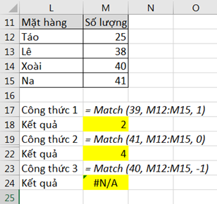
* Hàm INDEX
Cú pháp
INDEX (Array, Row_num, Column_num)
Chức năng
Trả về giá trị trong ô ở hàng thứ row_num, cột thứ column_num trong mảng array.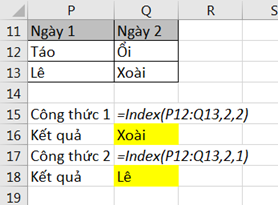
3.8 Các hàm toán học
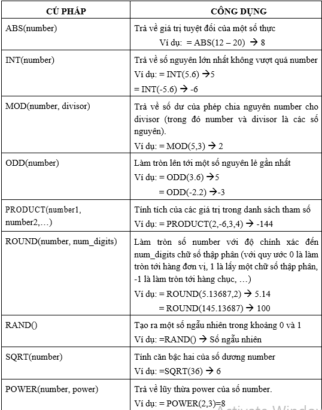
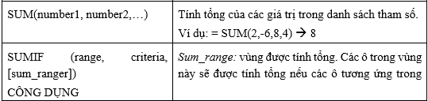
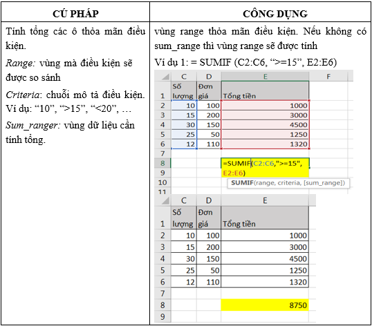
Bảng 6-7 Các hàm toán học
3.9 Các hàm kiểm tra (IS-function)
Các hàm kiểm tra dùng để kiểm tra xem kiểu của một giá trị hay của một ô có thỏa mãn một điều kiện nào đó không.
Các hàm kiểm tra luôn trả về một trong hai giá trị TRUE hoặc FALSE. Như vậy, các hàm này có thể đáp ứng được trong các trường hợp mà có một số dữ liệu ngoại lệ trong một bảng dữ liệu cần tính toán.
* Hàm ISERROR
Cú pháp ISERROR (value)
Ý nghĩa
Trả về giá trị TRUE nếu value là một lỗi bất kỳ, ngược lại trả về giá trị FALSE
* Hàm ISNA
Cú pháp ISNA (value)
Ý nghĩa
Trả về giá trị TRUE nếu value là lỗi #N/A, ngược lại trả về giá trị FALSE
* Hàm ISNUMBER
Cú pháp ISNUMBER (value)
Ý nghĩa
Trả về giá trị TRUE nếu value là giá trị số, ngược lại trả về giá trị FALSE
* Hàm ISTEXT
Cú pháp ISTEXT (value)
Ý nghĩa
Trả về giá trị TRUE nếu value là một chuỗi, ngược lại trả về giá trị FALSE
Hỗ trợ thống kê, tính toán dựa trên nhiều điều kiện khách nhau và được thực hiện trên mảng dữ liệu.
Khi thực hiện tính toán bằng công thức mảng thì công thức được bao bọc bởi hai dấu {}. Hai dấu ngoặc này người dùng không gõ mà được tự phát sinh khi người dùng thực hiện tính toán bằng cách nhấn tổ hợp phím Ctrl+Shift+Enter. Nếu khi thực hiện tính toán hoặc sửa chữa công thức mà quên nhấn tổ hợp phím trên thì công thức sẽ trả về giá trị không đúng hay thông báo lỗi #VALUE! Error. Ví dụ: Tính tổng số
lượng điện thoại do
Minh bán
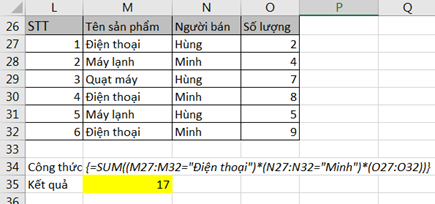
Thực hiện
Nhập công thức:
=SUM ((M27:M32="Điện thoại") * (N27:N32="Minh") * (O27:O32)
Ấn tổ hợp phím Ctrl+Shift+Enter để thực hiện tính toán bằng công thức mảng.
- Nếu phần tử Mi là “Điện thoại” tức là 1(True) được trả về, ngược lại trả về 0 (False)
- Nếu phần tử Ni là “Điện thoại” tức là 1(True) được trả về, ngược lại trả về 0 (False)
- Cuối cùng, phần tử Oi được trả về.
Ba giá trị này được nhân lại với nhau. Sau đó, hàm Sum ở ngoài cùng sẽ tính tổng cho tất cả các dòng